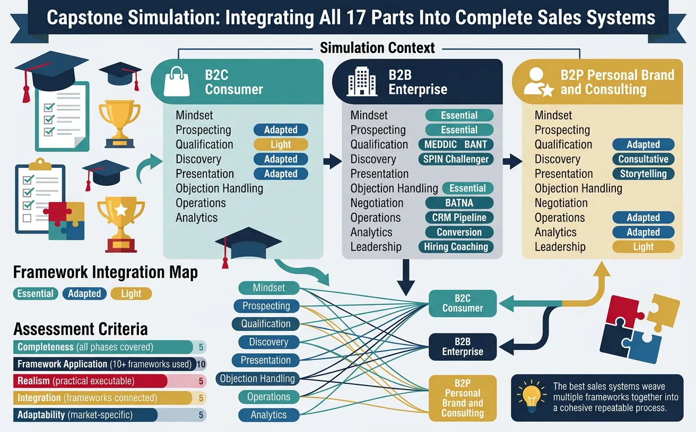
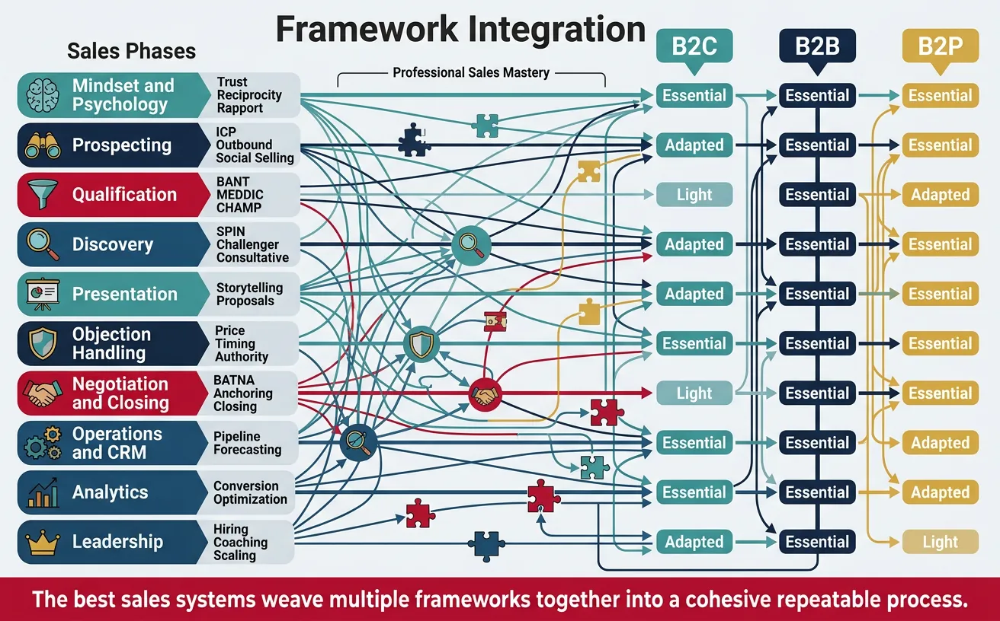
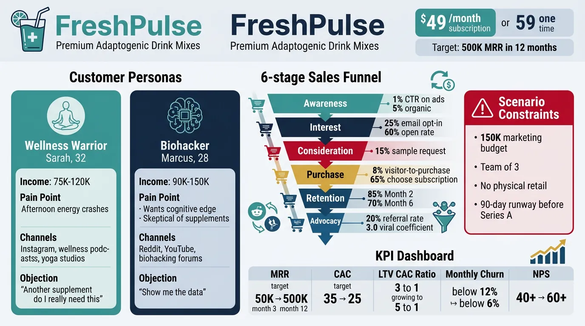
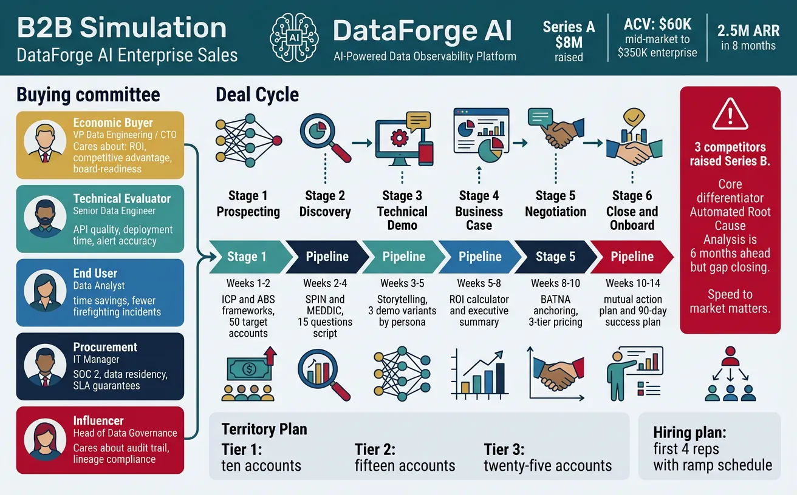
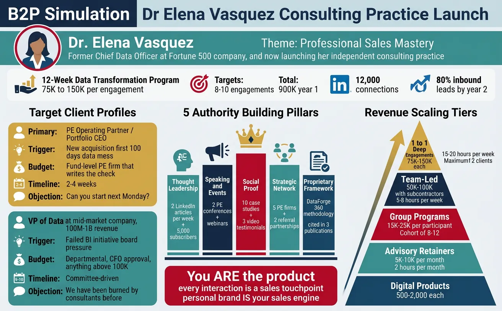

We use cookies to enhance your browsing experience, serve personalized content, and analyze our traffic.
By clicking "Accept All", you consent to our use of cookies. See our
Privacy Policy
for more information.
This capstone simulation is the culmination of the entire 18-part Sales Mastery series. Rather than introducing new concepts, it challenges you to integrate and apply every framework, model, and technique you've learned across all 17 previous parts. You'll build complete, end-to-end sales systems for three distinct selling contexts: B2C (consumer), B2B (enterprise), and B2P (personal brand/consulting).
Each simulation scenario presents a realistic business situation. Your task is to design, document, and defend a complete sales strategy—from initial prospecting through closing, retention, and scaling. Think of this as your "final exam" and your portfolio piece.

Figure 1: Capstone simulation overview — integrating all 17 parts into complete sales systems for three selling contexts
Framework Integration Map
Every framework from the series maps to specific phases of each simulation. This table shows which parts apply where—use it as your reference guide while building each system.

Figure 2: Framework integration map — connecting frameworks from all 17 parts to B2C, B2B, and B2P simulation phases
Sales Phase
Frameworks (Parts)
B2C Apply?
B2B Apply?
B2P Apply?
Mindset & Psychology
Trust, reciprocity, rapport (Part 1)
Essential
Essential
Essential
Prospecting
ICP, outbound, social selling (Part 2)
Adapted
Essential
Essential
Qualification
BANT, MEDDIC, CHAMP (Part 3)
Light
Essential
Adapted
Discovery
SPIN, Challenger, consultative (Part 4)
Adapted
Essential
Essential
Presentation
Storytelling, proposals (Part 5)
Adapted
Essential
Essential
Objection Handling
Price, timing, authority (Part 6)
Essential
Essential
Essential
Negotiation & Closing
BATNA, anchoring, closing (Part 7)
Light
Essential
Essential
Operations & CRM
Pipeline, forecasting (Part 11)
Essential
Essential
Adapted
Analytics
Conversion, optimization (Part 13)
Essential
Essential
Adapted
Leadership
Hiring, coaching, scaling (Part 14)
Adapted
Essential
Light
Integration Principle: The best sales systems don't use frameworks in isolation—they weave multiple frameworks together into a cohesive, repeatable process. Each simulation challenges you to show how frameworks connect.
Assessment Criteria
Evaluate your simulation outputs against these five dimensions. Each dimension is weighted equally, and a strong capstone scores 4+ on every criterion.
Criterion
What It Measures
Score 1-2 (Weak)
Score 3 (Adequate)
Score 4-5 (Strong)
Completeness
All sales phases covered
Missing major phases
All phases present, some thin
Every phase detailed with specifics
Framework Application
Correct use of 10+ frameworks
Frameworks named but not applied
Frameworks applied to scenario
Multiple frameworks integrated per phase
Realism
Practical, executable strategy
Theoretical, no specifics
Realistic with some gaps
Could be implemented Monday morning
Metrics & Measurement
KPIs, targets, dashboards defined
No metrics mentioned
Key metrics identified
Full measurement system with benchmarks
Adaptability
Contingency plans, iteration built in
Single rigid plan
Some flexibility acknowledged
Built-in feedback loops and pivots
Self-Assessment Tip: After completing each simulation, score yourself honestly on all five criteria. Any dimension below 3 deserves revision. Share your output with a peer or mentor for external validation.
B2C Simulation
You are the newly hired VP of Sales for FreshPulse, a direct-to-consumer health and wellness subscription brand launching a premium line of adaptogenic drink mixes. The product retails at $49/month for a subscription or $59 for a one-time purchase. Your target audience is health-conscious professionals aged 25-45 in urban markets. The company has $2M in seed funding, an e-commerce site, and a small social media following of 15,000. Your mandate: build a sales engine that generates $500K in monthly recurring revenue within 12 months.

Figure 3: B2C simulation — building a sales engine for FreshPulse DTC health brand targeting $500K MRR
Scenario Constraints: $150K marketing budget for Year 1, team of 3 (you + 2 hires), no physical retail presence yet, 90-day runway to prove product-market fit before Series A fundraising begins.
Your B2C Customer Avatar
Attribute
Primary Persona
Secondary Persona
Name
"Wellness Warrior" — Sarah, 32
"Biohacker" — Marcus, 28
Income
$75K-$120K
$90K-$150K
Pain Points
Afternoon energy crashes, doesn't want more coffee
Wants cognitive edge, skeptical of supplements
Decision Triggers
Social proof, clean ingredients, convenience
Clinical studies, measurable outcomes, novelty
Channels
Instagram, wellness podcasts, yoga studios
Reddit, YouTube reviews, biohacking forums
Objections
"Another supplement? Do I really need this?"
"Show me the data—what's actually in it?"
Sales Process Design
Design a complete B2C sales funnel using frameworks from Parts 1, 2, 5, 6, 9, and 12. Your funnel must move prospects from awareness through purchase and into recurring subscription.
Funnel Stage
Frameworks Applied
Tactics to Design
Target Conversion
Awareness
Part 2 (Social Selling), Part 9 (D2C Funnels)
Design 3 content pillars, influencer strategy, paid social plan
Referral program (give $10 / get $10), UGC campaign, ambassador program
20% referral rate, 3.0 viral coefficient
B2C Simulation Task
Time: 90 minutesDeliverable: B2C Sales Playbook
Write 3 cold outreach DMs for Instagram influencers (under 50K followers) using Part 2's personalization framework
Create a 5-email nurture sequence using Part 5's storytelling arc (hook → pain → vision → proof → CTA)
Build an objection response matrix for the top 5 consumer objections using Part 6's Feel-Felt-Found technique
Design the subscription vs. one-time pricing page using Part 7's anchoring and Part 9's decoy effect
Draft a 90-day retention plan with touchpoints, triggers, and escalation paths
Success Metrics Dashboard
Define the KPIs you'll track weekly, monthly, and quarterly. Use frameworks from Parts 11 and 13.
Metric
Formula
Target (Month 3)
Target (Month 12)
Review Cadence
Monthly Recurring Revenue
Active subscribers × $49
$50K
$500K
Weekly
Customer Acquisition Cost
Marketing spend ÷ new customers
$35
$25
Monthly
LTV:CAC Ratio
Avg. customer lifetime value ÷ CAC
3:1
5:1
Quarterly
Month-Over-Month Churn
Lost subscribers ÷ start-of-month subscribers
<12%
<6%
Monthly
Net Promoter Score
% Promoters − % Detractors
40+
60+
Quarterly
B2B Simulation
You are the founding Head of Sales for DataForge AI, a Series A startup ($8M raised) selling an AI-powered data observability platform to mid-market and enterprise companies. The platform monitors data pipelines, detects anomalies, and auto-resolves quality issues. Annual contract values range from $60K (mid-market) to $350K (enterprise). You have 8 months to build a team and close $2.5M in annual recurring revenue (ARR).

Figure 4: B2B simulation — founding a sales team for DataForge AI to close $2.5M ARR in 8 months
Scenario Pressure: Three direct competitors raised Series B last quarter. Your product's core differentiator—automated root cause analysis—is 6 months ahead of competitors but they're closing the gap. Speed to market matters.
Your ICP & Buying Committee
Stakeholder
Title
Priority
What They Care About
MEDDIC Role
Economic Buyer
VP Data Engineering / CTO
Revenue impact, TCO reduction
ROI, competitive advantage, board-readiness
Economic Buyer
Technical Evaluator
Senior Data Engineer
Integration ease, false positive rate
API quality, deployment time, alert accuracy
Champion (potential)
End User
Data Analyst / Analytics Engineer
Dashboard usability, alert relevance
Time savings, fewer firefighting incidents
Coach
Procurement
IT Procurement Manager
Security compliance, contract terms
SOC 2, data residency, SLA guarantees
Decision Criteria
Influencer
Head of Data Governance
Data quality standards, regulatory risk
Audit trail, lineage tracking, compliance
Influencer
Sales Playbook Design
Create a complete B2B sales playbook applying frameworks from Parts 2, 3, 4, 5, 7, 8, 11, and 12. Your playbook must cover the entire deal cycle from first touch to close.
Build a territory plan for 50 target accounts using Part 2's ICP framework—segment into Tier 1 (10), Tier 2 (15), Tier 3 (25)
Write a cold email sequence (3 emails) for the VP of Data Engineering using Part 2's pain-based outreach + Part 4's implication questions
Create a MEDDIC scorecard for a $200K deal—fill in all 6 elements with realistic scenario data
Design a competitive battle card against 2 named competitors using Part 6's trap-setting and Part 5's positioning
Build a mutual action plan (close plan) for a 90-day enterprise sales cycle with 12+ milestones
Draft a hiring plan for your first 4 reps using Part 14's competency model and ramp schedule
Team Structure & Scaling Plan
Design your sales organization using frameworks from Parts 14 and 15. Show how the team evolves from founder-led sales to a scalable machine.
Phase
Timeline
Team Size
Roles
ARR Target
Founder-Led
Months 1-3
1 (You)
Full-cycle AE (you), part-time SDR support
$300K
First Hires
Months 3-5
3
2 AEs (mid-market + enterprise), 1 SDR
$800K
Building Motions
Months 5-8
6
3 AEs, 2 SDRs, 1 SE (Sales Engineer)
$2.5M
Scaling (Series B)
Months 9-12
10+
4 AEs, 3 SDRs, 2 SEs, 1 Sales Ops
$5M+
Key Design Question: At what ARR do you split mid-market and enterprise into separate teams? Most companies split around $3-5M ARR when deal sizes diverge enough to warrant specialized motions, comp plans, and coaching rhythms.
B2P Simulation
You are Dr. Elena Vasquez, a former Chief Data Officer at a Fortune 500 company, now launching an independent consulting practice specializing in data strategy for private equity portfolio companies. Your premium offering is a 12-week Data Transformation Program priced at $75K-$150K per engagement. You have a strong LinkedIn network (12,000 connections), a few speaking invitations, but no formal sales process. Your goal: close 8-10 engagements ($900K revenue) in Year 1 while building a personal brand that generates 80% inbound leads by Year 2.

Figure 5: B2P simulation — launching a premium consulting practice targeting $900K revenue in Year 1
B2P Reality Check: You are the product. Every interaction—a LinkedIn post, a keynote, a coffee meeting—is a sales touchpoint. Your personal brand IS your sales engine. There's no separating "marketing" from "selling" in B2P.
Your Target Client Profile
Attribute
Primary Client
Secondary Client
Buyer
PE Operating Partner / Portfolio CEO
VP of Data at mid-market company ($100M-$1B)
Trigger Event
New acquisition, first 100 days, data mess
Failed BI initiative, board pressure for data-driven decisions
Design a 12-month authority-building plan using frameworks from Parts 10, 16, and 17. Your authority platform must position you as the go-to expert in PE-backed data transformations.
Part 10 (Premium Positioning), Part 5 (Presentation)
Speak at 2 PE conferences, host 1 webinar
6+ keynotes, recurring invite to 2 industry events
Social Proof
Part 1 (Trust), Part 16 (Reputation)
Publish 2 case studies from CDO tenure, get 5 testimonials
10+ case studies, 3 video testimonials from PE partners
Strategic Network
Part 17 (Partnerships), Part 2 (Social Selling)
Join 2 PE operating groups, 10 coffee meetings/month
Referral sources in 5 PE firms, 2 formal referral partnerships
Proprietary Framework
Part 10 (Methodology Packaging), Part 5 (Storytelling)
Package "DataForge 360" methodology, create visual model
Framework cited in 3 industry publications, used as sales tool
Scaling Beyond Time Constraints
The fundamental challenge of B2P sales: you are both the product and the sales engine. Use frameworks from Parts 10, 14, and 17 to design a model that scales beyond your personal time.
Revenue Tier
Revenue Range
Model
Your Time per Client
Scaling Lever
1:1 Deep Engagements
$75K-$150K each
You lead 100% of delivery
15-20 hrs/week per client
Max 2 concurrent clients
Team-Led Engagements
$50K-$100K each
You lead, subcontractors execute
5-8 hrs/week per client
Hire 2-3 senior associates
Group Programs
$15K-$25K per participant
Cohort of 8-12 CDOs/VPs
3-4 hrs/week total
Productized curriculum
Advisory Retainers
$5K-$10K/month
Monthly strategy call + async access
2 hrs/month per client
Scale to 10-15 concurrent
Digital Products
$500-$2,000 each
Self-service courses, templates, assessments
0 hrs (create once)
Unlimited audience
B2P Simulation Task
Time: 90 minutesDeliverable: Personal Brand Sales Plan
Write your positioning statement using Part 10's "I help [who] achieve [what] through [how]" format—create 3 variations for different audiences
Design a consultation-to-close process for a $100K engagement using Part 4's SPIN discovery + Part 7's value-based pricing
Create a referral activation plan targeting 5 PE operating partners using Part 2's social selling + Part 16's trust equation
Build a Year 1 revenue model showing the mix of 1:1, group, retainer, and digital revenue to hit $900K
Draft a "No" playbook—5 scenarios where you should decline business to protect reputation (Part 16)
The Scaling Paradox: The more you scale through leverage (team, courses, products), the less "premium" your brand feels. Design explicitly for which tier carries your personal brand promise and which tiers trade on your methodology brand instead.
Capstone Strategy Canvas
Use this canvas to consolidate your complete sales strategy for any one of the three simulation contexts. Download your strategy as a polished document to serve as your reference playbook.
Capstone Sales Strategy Canvas
Synthesize your simulation into a comprehensive strategy. Download as Word, Excel, PDF, or PowerPoint.
Draft auto-saved
All data stays in your browser. Nothing is sent to or stored on any server.
Exercises
Exercise 1: Cross-Context Comparison
Complete all three simulations (B2C, B2B, B2P), then write a 1-page comparison analyzing:
Which frameworks are universal across all three contexts?
Which frameworks are context-specific and why?
How does the role of trust differ in B2C vs. B2B vs. B2P?
Which context requires the longest sales cycle? The most stakeholders? The most personal brand equity?
Exercise 2: 90-Day Action Plan
Choose the simulation most relevant to your career and create a detailed 90-day action plan:
Week 11-13: Review & Optimize—win/loss analysis, process refinement, team planning
Exercise 3: Peer Review Simulation
Share your capstone output with a peer, mentor, or colleague. Have them evaluate using the Assessment Criteria rubric. Focus the review on:
Is the strategy executable starting Monday morning?
Are the metrics realistic and measurable?
What's the biggest blind spot in the plan?
Which framework was most effectively applied? Least?
Key Takeaways
Series Capstone — Core Lessons:
Sales is a system, not a series of tricks — every framework connects to create a repeatable, scalable process
Context determines framework selection — B2C prioritizes speed and emotion; B2B prioritizes process and multi-threading; B2P prioritizes trust and authority
The best salespeople are builders — they build processes, relationships, teams, and brands, not just pipelines
Metrics without action are vanity — define KPIs that drive decisions, not dashboards that look impressive
Ethical selling compounds — reputation, referrals, and repeat business create exponential returns over years
Scaling requires letting go — founder-led sales must evolve into team-led motions, or growth hits a ceiling
The best strategy adapts — build feedback loops, run experiments, and iterate quarterly at minimum
Master the fundamentals, then innovate — psychology, discovery, and trust are timeless; tactics and channels change